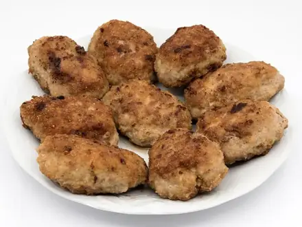

Что приготовить из фарша
Котлеты, тефтели, макароны по-флотски и начинки. 18 рецептов: у каждого время, калории и БЖУ на порцию, пошаговые инструкции и список покупок
 Макароны по-флотски35 мин · 719 ккал · Б 33 г · Второе блюдо
Макароны по-флотски35 мин · 719 ккал · Б 33 г · Второе блюдо Куриные котлеты на пару40 мин · 272 ккал · Б 29 г · Второе блюдо
Куриные котлеты на пару40 мин · 272 ккал · Б 29 г · Второе блюдо
Котлеты домашние жареные45 мин · 485 ккал · Б 24 г · Второе блюдо Куриные котлеты в духовке45 мин · 265 ккал · Б 25 г · Второе блюдо
Куриные котлеты в духовке45 мин · 265 ккал · Б 25 г · Второе блюдо Суп с фрикадельками50 мин · 329 ккал · Б 18 г · Суп
Суп с фрикадельками50 мин · 329 ккал · Б 18 г · Суп Тефтели из индейки на пару50 мин · 221 ккал · Б 22 г · Второе блюдо
Тефтели из индейки на пару50 мин · 221 ккал · Б 22 г · Второе блюдо Тефтели из индейки в томате50 мин · 300 ккал · Б 29 г · Второе блюдо
Тефтели из индейки в томате50 мин · 300 ккал · Б 29 г · Второе блюдо Тефтели в томатном соусе70 мин · 510 ккал · Б 25 г · Второе блюдо
Тефтели в томатном соусе70 мин · 510 ккал · Б 25 г · Второе блюдо Ленивые голубцы70 мин · 552 ккал · Б 24 г · Второе блюдо
Ленивые голубцы70 мин · 552 ккал · Б 24 г · Второе блюдо Колдуны70 мин · 781 ккал · Б 26 г · Второе блюдо
Колдуны70 мин · 781 ккал · Б 26 г · Второе блюдо Чили кон карне70 мин · 550 ккал · Б 31 г · Второе блюдо
Чили кон карне70 мин · 550 ккал · Б 31 г · Второе блюдо Ленивые хинкали80 мин · 758 ккал · Б 33 г · Второе блюдо
Ленивые хинкали80 мин · 758 ккал · Б 33 г · Второе блюдо Блинчики с мясом80 мин · 688 ккал · Б 28 г · Второе блюдо
Блинчики с мясом80 мин · 688 ккал · Б 28 г · Второе блюдо Фаршированные перцы90 мин · 597 ккал · Б 29 г · Второе блюдо
Фаршированные перцы90 мин · 597 ккал · Б 29 г · Второе блюдо Паста болоньезе100 мин · 788 ккал · Б 35 г · Второе блюдо
Паста болоньезе100 мин · 788 ккал · Б 35 г · Второе блюдо Беляши (перемячи)120 мин · 605 ккал · Б 22 г · Выпечка
Беляши (перемячи)120 мин · 605 ккал · Б 22 г · Выпечка Лазанья с мясом120 мин · 744 ккал · Б 35 г · Второе блюдо
Лазанья с мясом120 мин · 744 ккал · Б 35 г · Второе блюдо Мусака120 мин · 563 ккал · Б 25 г · Второе блюдо
Мусака120 мин · 563 ккал · Б 25 г · Второе блюдо
Другие подборки
- Что приготовить из курицы
- Что приготовить из мяса
- Что приготовить из рыбы
- Что приготовить из картошки
- Что приготовить из яиц
- Что приготовить из творога
- Что приготовить из кабачков
- Что приготовить из капусты
- Что приготовить из грибов
- Что приготовить из риса
- Что приготовить из макарон
- Что приготовить из гречки
- Быстрый ужин за 30 минут
- Быстрый завтрак за 20 минут
- Что приготовить на скорую руку
- ПП-рецепты: лёгкие блюда до 400 ккал
- Белковые блюда: от 25 г белка на порцию
- Дешёвые рецепты из простых продуктов
- Что приготовить ребёнку
- Постные блюда
- Блюда на пару
- Что приготовить в духовке
- Простые супы
- Простые салаты
- Выпечка и десерты
- Блюда на праздничный стол
- Что приготовить из остатков